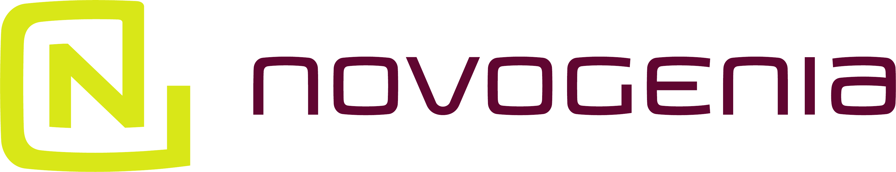
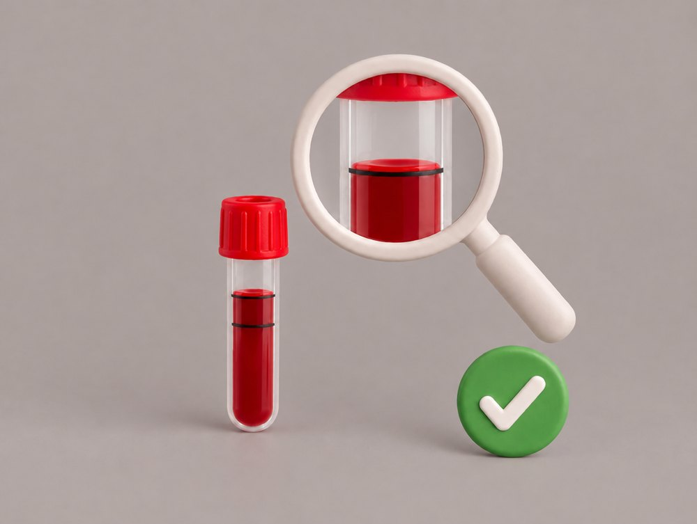
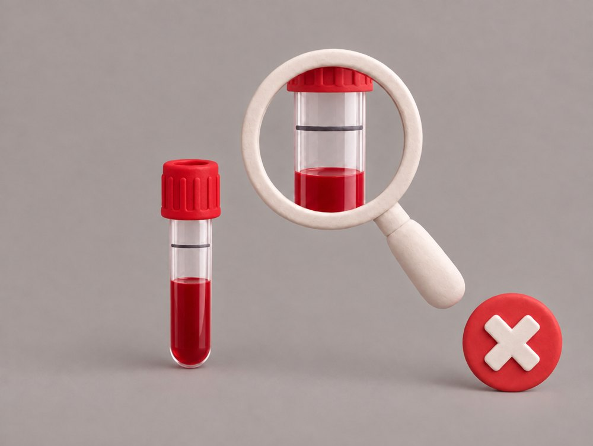

<!doctype html>
<html lang="de">
<head>
<meta charset="utf-8">
<meta name="viewport" content="width=device-width, initial-scale=1, viewport-fit=cover">
<meta name="theme-color" content="#1b0a17">
<title>Blutabnahme Schritt für Schritt</title>
<!-- Schrift lokal eingebunden (Datenschutz: keine Anfrage an Google Fonts) -->
<link href="schrift/schrift.css" rel="stylesheet">
<style>
:root { --mag:#5E0047; --rosa:#F2E4EE; --gruen:#1DB36B; --rot:#E0454B; --dunkel:#1b0a17; }
* { box-sizing:border-box; margin:0; padding:0; -webkit-tap-highlight-color:transparent; }
html, body { height:100%; background:#000; overflow:hidden; }
body { font-family:'Montserrat',system-ui,sans-serif; color:#fff; display:flex; justify-content:center; }

/* Feed wie bei Reels: jede Station fuellt den Bildschirm, Wischen rastet ein */
.feed { width:100%; max-width:480px; height:100%; height:100dvh; overflow-y:scroll; scroll-snap-type:y mandatory;
  overscroll-behavior:contain; scrollbar-width:none; position:relative; }
.feed::-webkit-scrollbar { display:none; }
.slide { height:100%; height:100dvh; scroll-snap-align:start; scroll-snap-stop:always; position:relative;
  overflow:hidden; background:var(--dunkel); }

/* Video: unscharfer Hintergrund fuellt das Hochformat, das Video sitzt in voller Breite darauf */
.unschaerfe { position:absolute; inset:-40px; background-size:cover; background-position:center;
  filter:blur(28px) brightness(.55) saturate(1.2); transform:scale(1.1); }
.buehne { position:absolute; left:0; right:0; top:46%; transform:translateY(-50%); aspect-ratio:4/3; }
.buehne img, .buehne video { position:absolute; inset:0; width:100%; height:100%; object-fit:cover; display:block; }
.buehne video { opacity:0; transition:opacity .3s; }
.buehne.laeuft video { opacity:1; }

/* Oben: Fortschritt wie Stories, darunter Stufe und Schritt */
.oben { position:absolute; left:0; right:0; top:0; padding:calc(10px + env(safe-area-inset-top)) 14px 28px;
  background:linear-gradient(rgba(0,0,0,.55), rgba(0,0,0,0)); z-index:5; pointer-events:none; }
.balken { height:4px; border-radius:2px; background:rgba(255,255,255,.25); overflow:hidden; }
.balken i { display:block; height:100%; background:#fff; border-radius:2px; }
.kennung { display:flex; align-items:center; gap:10px; margin-top:12px; }
.nr { width:36px; height:36px; border-radius:50%; background:var(--mag); border:2px solid rgba(255,255,255,.85);
  display:flex; align-items:center; justify-content:center; font-weight:800; font-size:15px; flex:none; }
.kennung b { display:block; font-size:12px; font-weight:700; letter-spacing:.12em; text-transform:uppercase; opacity:.85; }
.kennung div span { display:block; font-size:13px; font-weight:600; opacity:.75; margin-top:1px; }

/* Unten: Text liegt im Bild */
.unten { position:absolute; left:0; right:0; bottom:0; z-index:5;
  padding:60px 84px calc(26px + env(safe-area-inset-bottom)) 18px;
  background:linear-gradient(rgba(0,0,0,0), rgba(0,0,0,.72) 45%); }
.unten h1 { font-size:27px; font-weight:800; line-height:1.1; letter-spacing:-.01em; text-shadow:0 2px 10px rgba(0,0,0,.4); }
.badge { display:inline-block; background:#fff; color:var(--mag); font-size:13px; font-weight:800; padding:3px 11px;
  border-radius:20px; margin-top:9px; }
.unten p { font-size:16px; line-height:1.4; margin-top:9px; opacity:.92; }
.hinweis { margin-top:12px; background:rgba(251,232,206,.95); color:#8F5410; border-radius:12px; padding:10px 12px;
  font-size:14px; line-height:1.35; }
.einheit { text-transform:none; }

/* Rechts: runde Knoepfe wie bei Reels */
.seite { position:fixed; z-index:20; right:max(12px, calc(50% - 240px + 12px)); bottom:calc(30px + env(safe-area-inset-bottom));
  display:flex; flex-direction:column; gap:14px; }
.rund { width:54px; height:54px; border-radius:50%; border:0; background:rgba(255,255,255,.18);
  backdrop-filter:blur(8px); -webkit-backdrop-filter:blur(8px); color:#fff; cursor:pointer;
  display:flex; align-items:center; justify-content:center; }
.rund svg { width:26px; height:26px; fill:currentColor; }
.rund.vor { background:#fff; color:var(--mag); }
.rund:disabled { opacity:.25; cursor:default; }
.ton { width:44px; height:44px; align-self:center; }
.ton svg { width:22px; height:22px; }

/* Start, Pruefpunkt, Ende */
.karte { position:absolute; inset:0; display:flex; flex-direction:column; justify-content:center;
  padding:calc(40px + env(safe-area-inset-top)) 22px calc(120px + env(safe-area-inset-bottom)); gap:16px;
  background:radial-gradient(120% 80% at 20% 0%, #7A1A63 0%, var(--mag) 40%, var(--dunkel) 100%); }
.karte .logo { width:150px; filter:brightness(0) invert(1); }
.karte .kicker { font-size:12px; font-weight:700; letter-spacing:.16em; text-transform:uppercase; opacity:.8; }
.karte h1 { font-size:36px; font-weight:800; line-height:1.03; letter-spacing:-.02em; }
.karte .lead { font-size:16px; line-height:1.45; opacity:.9; }
.liste { background:rgba(255,255,255,.1); border-radius:16px; padding:14px 16px; }
.liste li { list-style:none; font-size:15px; line-height:1.4; padding-left:20px; position:relative; margin-bottom:8px; opacity:.95; }
.liste li:last-child { margin-bottom:0; }
.liste li::before { content:''; position:absolute; left:2px; top:7px; width:8px; height:8px; border-radius:50%; background:#fff; }
.wisch { display:flex; align-items:center; gap:8px; font-size:14px; font-weight:700; opacity:.85; margin-top:6px; }
.wisch svg { width:22px; height:22px; fill:#fff; animation:hoch 1.6s ease-in-out infinite; }
@keyframes hoch { 0%,100% { transform:translateY(4px); opacity:.5 } 50% { transform:translateY(-4px); opacity:1 } }
.klein { font-size:12px; opacity:.6; line-height:1.4; }
/* Start-Checkliste: erst alles abhaken, dann geht es weiter */
.check { display:flex; flex-direction:column; gap:8px; }
.check button { display:flex; align-items:flex-start; gap:12px; text-align:left; font:inherit; font-size:15px; line-height:1.35;
  color:#fff; background:rgba(255,255,255,.1); border:2px solid rgba(255,255,255,.18); border-radius:14px; padding:12px 14px;
  cursor:pointer; transition:background .2s, border-color .2s; }
.check i { flex:none; width:26px; height:26px; border-radius:8px; border:2px solid rgba(255,255,255,.7); margin-top:-1px;
  display:flex; align-items:center; justify-content:center; }
.check button.an { background:rgba(29,179,107,.22); border-color:var(--gruen); }
.check button.an i { background:var(--gruen); border-color:var(--gruen); }
.check button.an i::after { content:''; width:7px; height:13px; border:solid #fff; border-width:0 3px 3px 0;
  transform:rotate(45deg) translate(-1px,-1px); }
.los { height:56px; border-radius:14px; border:0; font:inherit; font-size:17px; font-weight:800; background:#fff;
  color:var(--mag); cursor:pointer; transition:opacity .2s; }
.los:disabled { opacity:.3; cursor:default; }
.feed.gesperrt { overflow-y:hidden; }
.stopp { display:inline-block; align-self:flex-start; background:#fff; color:var(--mag); font-size:12px; font-weight:800;
  letter-spacing:.12em; text-transform:uppercase; padding:4px 12px; border-radius:20px; }
.wahl { display:grid; grid-template-columns:1fr 1fr; gap:12px; }
.wahl button { border:3px solid transparent; background:#fff; border-radius:16px; padding:8px 8px 14px; font:inherit;
  cursor:pointer; text-align:center; color:#17161C; }
.wahl img { width:100%; border-radius:10px; display:block; }
.wahl b { display:block; font-size:16px; font-weight:800; margin-top:8px; }
.wahl span { display:block; font-size:13px; color:#5C5A66; margin-top:3px; line-height:1.3; }
.wahl .ja { border-color:var(--gruen); } .wahl .ja b { color:#0F8A4D; }
.wahl .nein b { color:#C0262D; }
.haken { width:96px; height:96px; border-radius:50%; background:var(--gruen); display:flex; align-items:center; justify-content:center; }
.haken svg { width:52px; height:52px; fill:#fff; }

/* Sprachwahl */
.sprachen { display:flex; flex-direction:column; gap:12px; width:100%; max-width:300px; margin-top:10px; }
.sprachen button { height:60px; border-radius:16px; border:0; font:inherit; font-size:19px; font-weight:800; background:#fff;
  color:var(--mag); cursor:pointer; }
.kopfzeile { display:flex; align-items:center; justify-content:space-between; }
.umschalt { height:34px; padding:0 14px; border-radius:17px; border:2px solid rgba(255,255,255,.6); background:transparent;
  color:#fff; font:inherit; font-size:13px; font-weight:800; letter-spacing:.08em; cursor:pointer; }
</style>
</head>
<body>
<div class="feed" id="feed"></div>
<div class="seite">
  <button class="rund" id="hoch" aria-label="Zurück"><svg viewBox="0 0 24 24"><path d="M7.4 15.4 12 10.8l4.6 4.6L18 14l-6-6-6 6z"/></svg></button>
  <button class="rund vor" id="runter" aria-label="Weiter"><svg viewBox="0 0 24 24"><path d="M7.4 8.6 12 13.2l4.6-4.6L18 10l-6 6-6-6z"/></svg></button>
</div>

<script>
// Sprache: ?lang=de|en, sonst gespeicherte Wahl, sonst Auswahlbildschirm
const SPRACHEN = ['de', 'en'];
let L = new URLSearchParams(location.search).get('lang');
if (!SPRACHEN.includes(L)) { try { L = localStorage.getItem('blut-lang'); } catch (e) { L = null; } }

const T = {
  de: { kicker:'Blutabnahme zu Hause', h1:'Schritt für Schritt.',
        lead:'Jeder Schritt ist ein kurzes Video. Schau zu, mach nach, dann nach oben wischen.',
        c:['Ich bin <b>nüchtern</b> und habe 8–12 Stunden nichts gegessen.',
           'Ich habe gestern <b>ca. 8 Gläser</b> und heute noch <b>2 Gläser</b> Wasser getrunken.',
           'Es ist <b>vormittags</b> (7–10 Uhr), <b>Montag bis Donnerstag</b>.',
           'Ich habe einen <b>Timer</b> bereit.'],
        los:'Alles erledigt — los geht’s', ifu:'Vor Gebrauch die Gebrauchsanweisung des Geräteherstellers lesen. Nur für Erwachsene.',
        stopp:'Stopp · Prüfen', pruefH:'Blut mindestens bis zur oberen Linie?',
        pruefP:'Röhrchen senkrecht halten. Bis zur oberen Linie oder darüber: fertig, nur noch verpacken. Darunter: mit dem Finger weiter.',
        ja:'Ja', jaS:'Weiter mit Verpacken', nein:'Nein', neinS:'Mit dem Finger weiter',
        fertigH:'Geschafft!', fertigP:'Danke. Bis zur Post bei Zimmertemperatur lagern — nicht auf die Heizung, nicht in die Sonne.',
        schritt:(n, N) => `Schritt ${n} von ${N}`, zurueck:'Zurück', weiter:'Weiter' },
  en: { kicker:'Blood sampling at home', h1:'Step by step.',
        lead:'Every step is a short video. Watch, copy, then swipe up.',
        c:['I am <b>fasting</b> and have not eaten for 8–12 hours.',
           'Yesterday I drank <b>about 8 glasses</b> of water and today another <b>2 glasses</b>.',
           'It is <b>morning</b> (7–10 am), <b>Monday to Thursday</b>.',
           'I have a <b>timer</b> ready.'],
        los:'All done — let’s go', ifu:'Read the device manufacturer’s instructions before use. Adults only.',
        stopp:'Stop · Check', pruefH:'Blood at least up to the upper line?',
        pruefP:'Hold the tube upright. Up to the upper line or above: done, just pack it. Below: continue with the finger.',
        ja:'Yes', jaS:'Continue with packing', nein:'No', neinS:'Continue with the finger',
        fertigH:'Done!', fertigP:'Thank you. Keep at room temperature until posting — not on a radiator, not in the sun.',
        schritt:(n, N) => `Step ${n} of ${N}`, zurueck:'Back', weiter:'Next' },
};

const ST = {
  de: { v:'Vorbereiten', s:'Schultergerät', a:'Abnehmen und prüfen', f:'Nur wenn nötig: Finger', b:'Verpacken und senden' },
  en: { v:'Prepare', s:'Shoulder device', a:'Remove and check', f:'Only if needed: finger', b:'Pack and send' },
};
// [Nummer, Stufe, Clip, {Sprache: [Titel, Text, Badge, Hinweis]}]
// Clip = Dateiname in videos/ und bilder/ (seit Gloria 05.11.2026 nicht mehr gleich der Nummer)
const SCHRITTE = [
  [1,'v','s01',{de:['In Bewegung kommen','Mindestens 5 Minuten zügig gehen oder Treppen steigen.'],en:['Get moving','Walk briskly or climb stairs for at least 5 minutes.']}],
  [2,'v','s02',{de:['Arm wärmen','Das Metallplättchen im Wärmepad knicken, wenn nötig mehrmals, bis das Pad weiß und warm wird. Auf den Oberarm halten, Timer stellen.','4 Min.'],en:['Warm the arm','Bend the metal disc in the heat pad, several times if needed, until the pad turns white and warm. Hold it on the upper arm, set a timer.','4 min']}],
  [3,'v','s03',{de:['Stelle reinigen','Mit dem Alkoholtupfer abwischen, trocknen lassen. Erst dann die Gerätepackung öffnen.'],en:['Clean the spot','Wipe with the alcohol pad and let it dry. Only then open the device pack.']}],
  [4,'s','s04',{de:['Röhrchen aufstecken','Deckel ab, die offene Seite fest auf den Anschluss drücken.'],en:['Attach the tube','Cap off, push the open end firmly onto the connector.']}],
  [5,'s','s05',{de:['Folie abziehen','Klebefläche nicht berühren.'],en:['Peel off the film','Do not touch the adhesive.']}],
  [6,'s','s06',{de:['Aufkleben','Auf den Oberarm setzen und andrücken. Noch nicht auslösen.','nur 1 ×'],en:['Stick it on','Place on the upper arm and press on. Do not trigger yet.','once only']}],
  [7,'s','s07',{de:['Knopf drücken','Den blauen Knopf ganz hineindrücken, bis es klickt.'],en:['Press the button','Push the blue button all the way in until it clicks.']}],
  [8,'s','s08',{de:['Arm hängen lassen','Timer stellen. Arm ruhig hängen lassen, nicht zum Nachsehen drehen.','max. 4 Min.'],en:['Let the arm hang','Set a timer. Let the arm hang still, do not turn it to look.','max. 4 min']}],
  [9,'a','s09',{de:['Gerät abnehmen','Langsam vom Arm ziehen, Röhrchen nach unten.'],en:['Remove the device','Pull it slowly off the arm, tube pointing down.']}],
  [10,'a','s10ab',{de:['Röhrchen abdrehen','Vorsichtig vom Gerät abdrehen, nicht abreißen, sonst verschüttest du Blut. Senkrecht halten.'],en:['Twist off the tube','Carefully twist it off the device, do not tear it off or you will spill blood. Keep it upright.']}],
  [11,'a','s10',{de:['Verschließen','Deckel gerade aufdrücken, bis er klickt. Nicht drehen, sonst ist das Röhrchen nicht dicht.'],en:['Close the tube','Push the cap straight on until it clicks. Do not twist, or it will not be sealed.']}],
  [12,'a','s17',{de:['Beschriften','Barcode-Aufkleber aufs Röhrchen, Datum eintragen, O (Oberarm) ankreuzen.','O'],en:['Label','Barcode sticker on the tube, write the date, tick O (upper arm).','O']}],
  'pruef',
  [13,'f','s11',{de:['Windmühle','Arm in großen, schnellen Kreisen schwingen, bis du das Blut in den Fingern spürst.'],en:['Windmill','Swing the arm in big, fast circles until you feel the blood in your fingers.']}],
  [14,'f','s12',{de:['Mittelfinger stechen','Fingerkuppe mit dem Alkoholtupfer abwischen, trocknen lassen. Kappe abdrehen, weiße Spitze ganz vorne fest andrücken, bis sie auslöst.'],en:['Prick the middle finger','Wipe the fingertip with the alcohol pad, let it dry. Twist off the cap, press the white tip firmly onto the very end until it triggers.']}],
  [15,'f','s13',{de:['Zweiter Stich','Neue Lanzette direkt neben den ersten Punkt. Jede Lanzette löst nur einmal aus.','2 ×'],en:['Second prick','New lancet right next to the first dot. Each lancet triggers only once.','2 ×']}],
  [16,'f','s14',{de:['Finger ausstreichen','Mittelfinger nach unten. Oben an der Wurzel fassen und fest zur Kuppe streichen, wie bei einer Melkbewegung. Locker lassen, wieder oben fassen.'],en:['Stroke the finger','Middle finger down. Grip at the base and stroke firmly to the tip, like a milking motion. Let go, grip at the top again.']}],
  [17,'f','s15',{de:['Bis oben füllen','Nur ins zweite, leere Röhrchen. Weiter ausstreichen, bis das Röhrchen ganz voll ist. Nicht bei der Linie aufhören.','ganz voll','Kaum Blut? Hand unter warmes Wasser, noch einmal die Windmühle, dann weiter ausstreichen.'],
           en:['Fill to the top','Only into the second, empty tube. Keep stroking until the tube is completely full. Do not stop at the line.','full','Hardly any blood? Hand under warm water, windmill again, then keep stroking.']}],
  [18,'f','s17k',{de:['Verschließen und beschriften','Finger kurz drücken, Pflaster drauf. Deckel aufdrücken, bis er klickt. Aufkleber drauf, Datum, K (Finger) ankreuzen.','K'],en:['Close and label','Press the finger briefly, put on a plaster. Push the cap on until it clicks. Sticker on, date, tick K (finger).','K']}],
  [19,'b','s18',{de:['Verpacken und absenden','Röhrchen in den Rücksendebeutel, nach Fingerabnahme beide. Verschließen, mit dem Begleitschein ins Kuvert, noch am selben Tag zur Post.'],en:['Pack and send','Tube into the return bag, both tubes after a finger top-up. Seal it, put it into the envelope with the form, post it the same day.']}],
];

const pad = n => String(n).padStart(2, '0');
const feed = document.getElementById('feed');
let slides = [], aktuell = 0, haken = [], beob = null;

function waehleSprache() {
  feed.innerHTML = `<section class="slide"><div class="karte" style="align-items:center;text-align:center">
      
      <h1 style="font-size:28px">Sprache wählen<br><span style="opacity:.7;font-size:22px">Choose language</span></h1>
      <div class="sprachen"><button data-l="de">Deutsch</button><button data-l="en">English</button></div>
    </div></section>`;
  document.querySelector('.seite').style.display = 'none';
  feed.querySelectorAll('[data-l]').forEach(b => b.onclick = () => {
    try { localStorage.setItem('blut-lang', b.dataset.l); } catch (e) {}
    L = b.dataset.l; document.querySelector('.seite').style.display = ''; bau();
  });
}

function bau() {
  const t = T[L], st = ST[L];
  document.documentElement.lang = L;
  document.getElementById('hoch').setAttribute('aria-label', t.zurueck);
  document.getElementById('runter').setAttribute('aria-label', t.weiter);
  const S = [{ typ:'start' }, ...SCHRITTE.map(x => {
    if (x === 'pruef') return { typ:'pruef' };
    const [nr, stu, clip, tx] = x, [ti, p, b, h] = tx[L];
    return { typ:'schritt', nr, clip, stufe: st[stu], t: ti, p, b, h };
  }), { typ:'fertig' }];
  const N = S.filter(s => s.typ === 'schritt').length;
  feed.innerHTML = S.map((s, k) => {
    const fort = `<div class="balken"><i style="width:${k / (S.length - 1) * 100}%"></i></div>`;
    if (s.typ === 'start') return `<section class="slide"><div class="karte">
        <div class="kopfzeile">
          <button class="umschalt" id="umschalt">${L === 'de' ? 'EN' : 'DE'}</button></div>
        <p class="kicker">${t.kicker}</p><h1>${t.h1}</h1><p class="lead">${t.lead}</p>
        <div class="check">${t.c.map(c => `<button data-c><i></i><span>${c}</span></button>`).join('')}</div>
        <button class="los" id="los" disabled>${t.los}</button>
        <p class="klein">${t.ifu}</p></div></section>`;
    if (s.typ === 'pruef') return `<section class="slide"><div class="karte">
        <div class="oben" style="position:absolute">${fort}</div>
        <span class="stopp">${t.stopp}</span><h1>${t.pruefH}</h1><p class="lead">${t.pruefP}</p>
        <div class="wahl">
          <button class="ja" data-ziel="19"><b>${t.ja}</b><span>${t.jaS}</span></button>
          <button class="nein" data-ziel="13"><b>${t.nein}</b><span>${t.neinS}</span></button>
        </div></div></section>`;
    if (s.typ === 'fertig') return `<section class="slide"><div class="karte" style="align-items:center;text-align:center">
        <div class="haken"><svg viewBox="0 0 24 24"><path d="M9 16.2 4.8 12l-1.4 1.4L9 19 21 7l-1.4-1.4z"/></svg></div>
        <h1>${t.fertigH}</h1><p class="lead">${t.fertigP}</p>
        <p class="klein">Novogenia GmbH · Strass 19, 5301 Eugendorf · service@novogenia.com</p></div></section>`;
    // Diese Clips beginnen mit einem eigenen Startbild
    const bild = ['s02', 's07', 's11', 's12', 's16'].includes(s.clip) ? `bilder/${s.clip}start.jpg` : `bilder/${s.clip}.jpg`;
    return `<section class="slide" data-video="videos/${s.clip}.mp4">
        <div class="unschaerfe" style="background-image:url(${bild})"></div>
        <div class="buehne"><video muted loop playsinline preload="none"></video></div>
        <div class="oben">${fort}<div class="kennung"><span class="nr">${s.nr}</span>
          <div><b>${s.stufe}</b><span>${t.schritt(s.nr, N)}</span></div></div></div>
        <div class="unten"><h1>${s.t}</h1>${s.b ? `<span class="badge">${s.b}</span>` : ''}<p>${s.p}</p>
          ${s.h ? `<div class="hinweis">${s.h}</div>` : ''}</div></section>`;
  }).join('');

  slides = [...feed.children]; aktuell = 0;
  haken = [...feed.querySelectorAll('[data-c]')];
  let bereit = false;
  try { bereit = sessionStorage.getItem('blut-bereit') === '1'; } catch (e) {}
  if (bereit) haken.forEach(h => h.classList.add('an'));
  haken.forEach(h => h.onclick = () => { h.classList.toggle('an'); pruefeStart(); });
  document.getElementById('los').onclick = () => {
    try { sessionStorage.setItem('blut-bereit', '1'); } catch (e) {}
    feed.classList.remove('gesperrt'); geh(1);
  };
  document.getElementById('umschalt').onclick = () => {
    L = L === 'de' ? 'en' : 'de';
    try { localStorage.setItem('blut-lang', L); } catch (e) {}
    bau();
  };
  feed.querySelectorAll('[data-ziel]').forEach(b => b.onclick = () => geh(S.findIndex(s => s.nr === +b.dataset.ziel)));
  if (beob) beob.disconnect();
  beob = new IntersectionObserver(es => {
    es.forEach(e => { if (e.isIntersecting && e.intersectionRatio > .6) aktiviere(slides.indexOf(e.target)); });
  }, { root: feed, threshold: [.6] });
  slides.forEach(sl => beob.observe(sl));
  feed.scrollTop = 0; pruefeStart();
  const start = parseInt(location.hash.slice(1));
  if (!isNaN(start) && start > 0) slides[Math.min(start, slides.length - 1)].scrollIntoView();
}

// Startseite: erst wenn alle vier Punkte abgehakt sind, laesst sich weiterwischen
function alleHaken() { return haken.length > 0 && haken.every(h => h.classList.contains('an')); }
function pruefeStart() {
  const los = document.getElementById('los'); if (!los) return;
  los.disabled = !alleHaken();
  feed.classList.toggle('gesperrt', !alleHaken() && aktuell === 0);
  document.getElementById('runter').disabled = (aktuell === 0 && !alleHaken()) || aktuell === slides.length - 1;
  document.getElementById('hoch').disabled = aktuell === 0;
}

// Das sichtbare Video startet von selbst und laeuft in Schleife; die Nachbarn laden vor.
function aktiviere(k) {
  aktuell = k;
  slides.forEach((sl, j) => {
    const v = sl.querySelector('video'); if (!v) return;
    if (Math.abs(j - k) <= 1 && !v.src) { v.src = sl.dataset.video; v.preload = 'auto'; }
    if (j === k) { v.currentTime = 0; v.play().then(() => sl.querySelector('.buehne').classList.add('laeuft')).catch(() => {}); }
    else v.pause();
  });
  pruefeStart();
  try { history.replaceState(null, '', location.pathname + location.search + '#' + k); } catch (e) {}
}
function geh(k) { k = Math.max(0, Math.min(slides.length - 1, k)); slides[k].scrollIntoView({ behavior: 'smooth' }); }
document.getElementById('runter').onclick = () => { if (aktuell === 0 && !alleHaken()) return; geh(aktuell + 1); };
document.getElementById('hoch').onclick = () => geh(aktuell - 1);
document.addEventListener('keydown', e => {
  if (!slides.length) return;
  if (e.key === 'ArrowDown' || e.key === 'ArrowRight' || e.key === ' ') { e.preventDefault(); document.getElementById('runter').click(); }
  if (e.key === 'ArrowUp' || e.key === 'ArrowLeft') { e.preventDefault(); geh(aktuell - 1); }
});
if (SPRACHEN.includes(L)) bau(); else waehleSprache();
</script>
</body>
</html>
